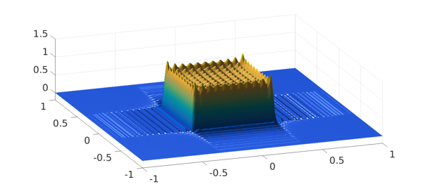
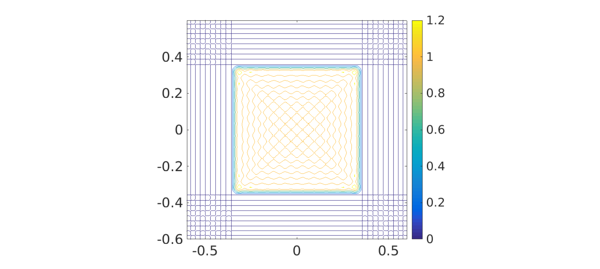
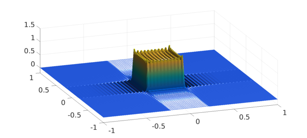
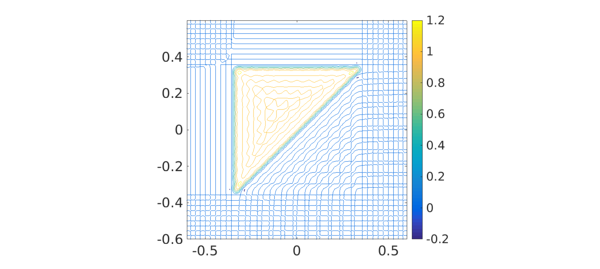

1. Chebyshev 2D Gibbs effect
Here is an illustration of the Gibbs phenomenon in 2D:
A = zeros(100); A(40:61,40:61) = 1; p = chebfun2(A); plot(p) zlim([-.2 1.5]), view(-20,50), camlight left, camlight left

A contour plot may also be interesting:
contour(p), axis([-.6 .6 -.6 .6]), axis square, colorbar

What's going on is that Chebfun has constructed a bivariate polynomial interpolant $p(x,y)$ to data at $100^2$ 2D Chebshev points, zero on most of the domain and 1 on a square in the middle.
How big is the overshoot?
max2(p)
ans = 1.320316254042390
This is big! -- about twice what we are used to with a 1D Gibbs effect:
a = zeros(100,1); a(40:61) = 1; p1 = chebfun(a); max(p1)
ans = 1.149050152970874
(In the limit of an infinite grid this would converge to $1.14114\dots;$ see equation (9.1) of [1].) The reason is that the overshoot at the corner is especially large, as we can see by zooming in:
pzoom = p{0,.5,0,.5}; plot(pzoom)
zlim([-.2 1.5]), view(-20,50), camlight left
Intuitively, we can think of the overshoot at the corner as being composed of one overshoot coming from the discontinuity in $x$ plus another coming from the discontinuity in $y$. The undershoot, by contrast, is of a more usual size:
min2(p)
ans = -0.153785123606236
2. Fourier 2D Gibbs effect
A Fourier analogue can be produced by including the 'periodic' flag:
t = chebfun2(A,'periodic'); plot(t) zlim([-.2 1.5]), view(-20,50), camlight, camlight, snapnow contour(t), axis([-.6 .6 -.6 .6]), axis square, colorbar

The extrema are similar:
max2(t), min2(t)
ans = 1.316297664943330 ans = -0.155566549488912
3. A triangular island
For fun we can change from a square to a triangle:
A2 = tril(A);
p2 = chebfun2(A2); plot(p2{-.5,.5,-.5,.5})
zlim([-.2 1.5]), view(-20,50), camlight left
max2(p2), min2(p2), snapnow
contour(p2), axis([-.6 .6 -.6 .6]), axis square, colorbar
ans = 1.294875501773784 ans = -0.228957699300502

4. Low rank?
Our first two examples, being perfectly aligned with the axes, have rank 1:
length(p) length(t)
ans =
1
ans =
1
The triangle example, because of is diagonal edge, has a bigger rank:
length(p2)
ans =
22
Usually in Chebfun2, the rank one observes is a numerical rank due to approximation to 6 digits, but in this case of a chebfun2 constructed by interpolation of discrete data, the rank is identical to that of the underlying matrix:
rank(A2)
ans =
22
This rank is determined simply by the sparsity structure, which shows a $22\times 22$ triangle.
spy(A2), axis([36 65 36 65])
5. Reference
- L. N. Trefethen, Approximation Theory and Approximation Practice, SIAM, 2013.